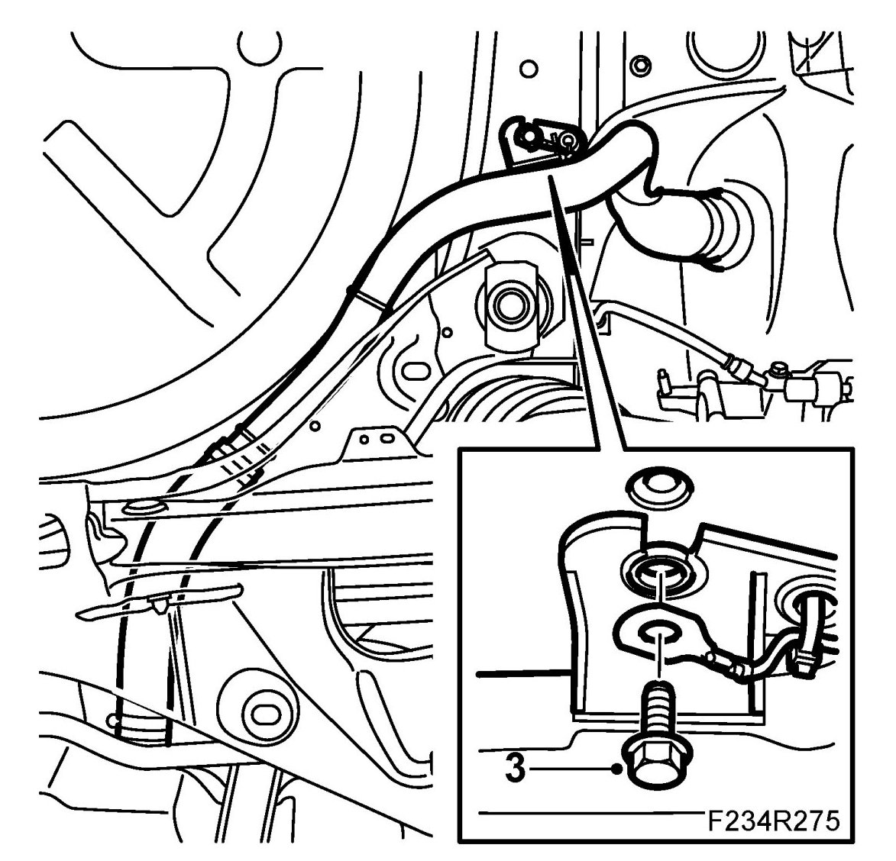
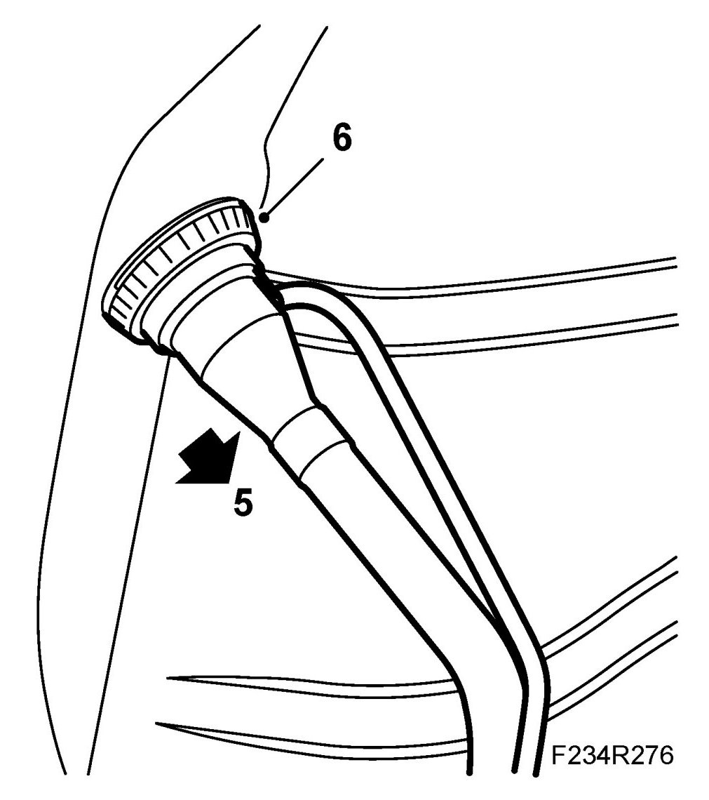
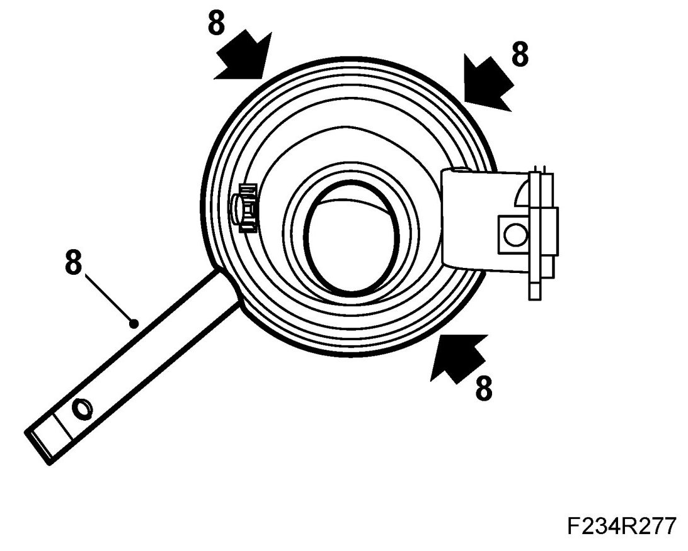
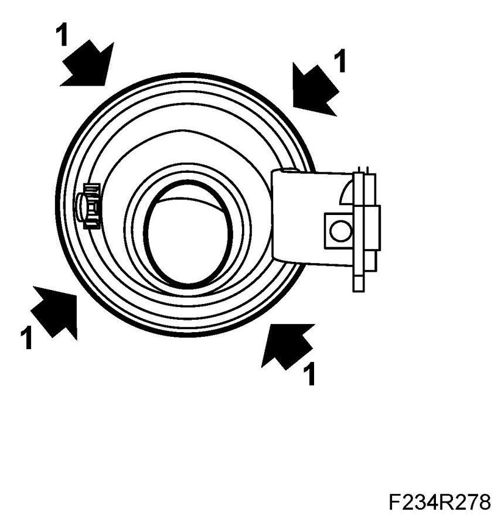
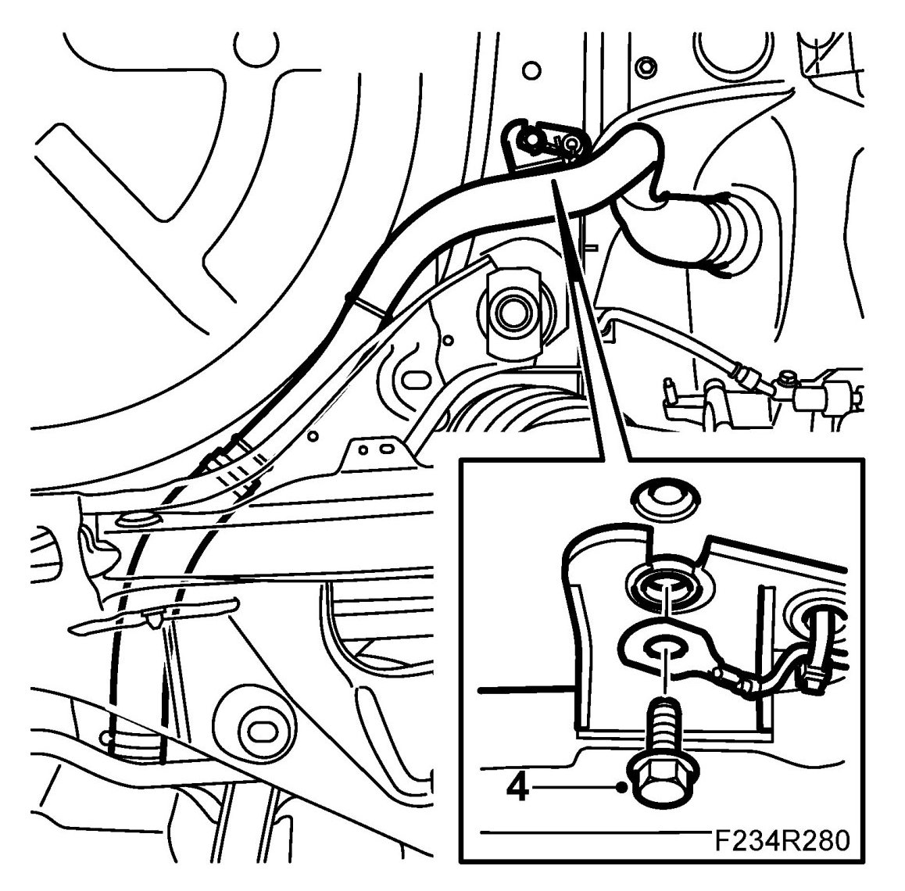

Fillpipe Restrictor: Service and Repair
Filler Cap Sleeve
To remove
1. Remove Solenoid, fuel filler flap (434 a), 4D, Solenoid, fuel filler flap, CV (434a), Solenoid, fuel filler flap (434a) 5D
2. Remove the Wing liner, rear
3. Remove the bolt holding the tank filler pipe.

4. Remove the fuel filler flap.
5. Remove the tank filler pipe from the filler cap connecting pipe.

6. Remove the filler cap connecting pipe from the inner panel's hole.
7. Remove the fuel filler flap.
8. Remove the filler cap sleeve using 82 93 474 Removal tool. Start removing from the rear edge of the filler cap sleeve so that the locking clips disengage.

To fit
1. Position the filler cap sleeve and press in. Make sure that it engages properly around the plate.

2. Fit the filler cap connecting pipe to the inner panel's hole.
3. Fit the tank filler pipe to the filler cap connecting pipe.
4. Fit the bolt for the tank filler pipe.

5. Fit the fuel filler flap.
6. Fit the Wing liner, rear
7. Fit Solenoid, fuel filler flap (434 a), 4D, Solenoid, fuel filler flap, CV (434a), Solenoid, fuel filler flap (434 a) 5D.